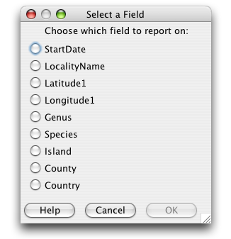

The Data Set Summary report counts and groups 'like' values in a single column, then displays them in the report in descending order. This provides an easy way to find spelling errors as well as giving an overview of the values for any given column.
The easiest way to create a Data Set Summary report is to 'drag and drop' a Data Set onto the Data Set Summary action on the sidebar. This eliminates the need to choose a Data Set for the report.
Or, click the Data Set Summary action on the Sidebar. A file dialog will appear to choose a Data Set for the report.
Next, choose a column for the report:

Select a Column
Select a column and click 'OK'. The report will open in the Workspace.
The following image is an example of a Data Set Summary report:
Data Set Summary Report
Several control buttons for the report appear at the top of the Workspace. The buttons are shown in the diagram below:

Data Set Summary Button Controls